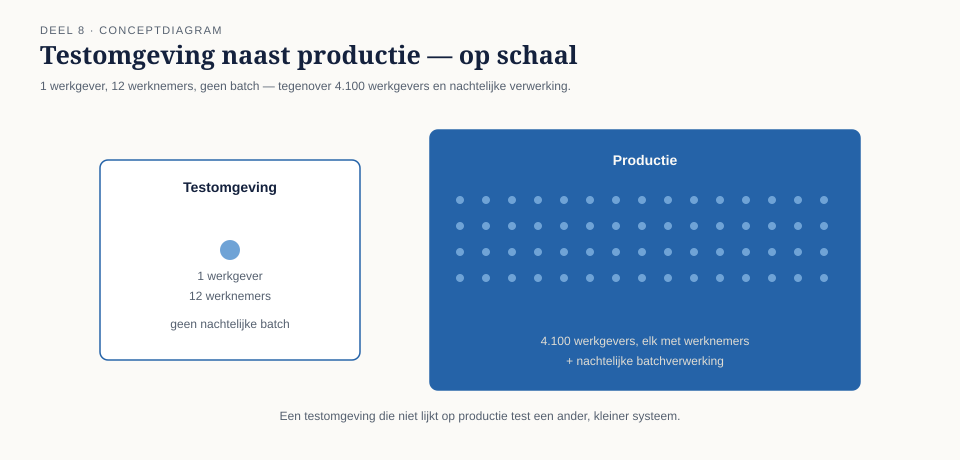
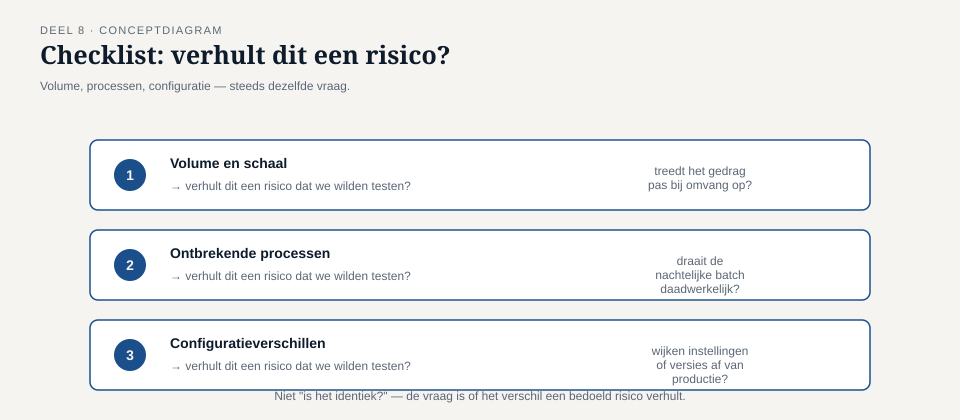
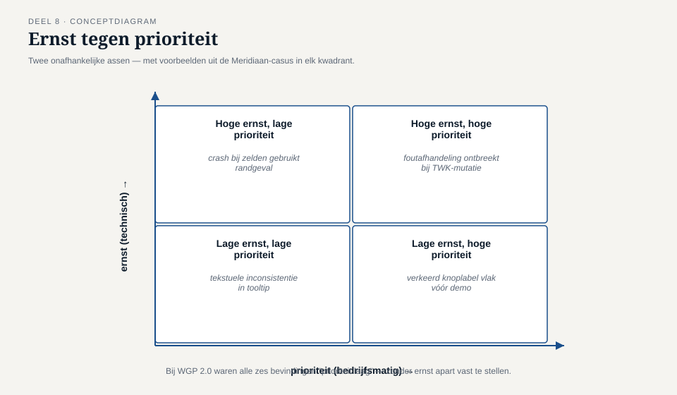

Deel 8 — Uitvoeren en bevindingen
Reader · Ductus-cursus Testen en Kwaliteitsborging · niveau 1 (fundament) · deel 8 van 30
Dit deel sluit twee bevindingen tegelijk: T5 (de testomgeving week wezenlijk af van productie — één werkgever, twaalf werknemers, geen nachtelijke batch) en T7 (de ketenpartner Vestara IT is nooit in de test betrokken; beide partijen testten tot aan hun eigen grens).
Leerdoelen
Na dit deel kun je:
- testomgevingseisen formuleren en beoordelen of een testomgeving representatief genoeg is voor het risico dat wordt getest;
- testdata als beheerd product benaderen, inclusief de spanning tussen realisme en beheersbaarheid;
- servicevirtualisatie en stubs toepassen als alternatief wanneer een echte ketenpartner niet beschikbaar is;
- een bevinding schrijven die reproduceerbaar is en geen discussie over de persoon veroorzaakt;
- ernst en prioriteit van een bevinding onderscheiden en beide correct toekennen;
- het bevindingenproces van melding tot afsluiting doorlopen en de rol van elke partij daarin benoemen;
- beargumenteren waarom een ketentest een eigen testniveau verdient in plaats van "erbij" te worden getest.
Studielast: één dagdeel klassikaal, circa drie uur zelfstudie.
1. Twaalf werknemers en geen nacht
De testomgeving van WGP 2.0 bevatte, op de dag van de acceptatietest, één fictieve werkgever met twaalf werknemers. Het productiesysteem bediende op dat moment ruim 4.100 werkgevers. Belangrijker dan de omvang: de nachtelijke batchverwerking die geaccepteerde mutaties daadwerkelijk naar de kernadministratie doorzette, draaide in de testomgeving niet. Zij was er nooit ingericht — niemand had het nodig geacht, omdat niemand het proces "een mutatie doorgeven" volledig had doorgedacht tot en met het moment waarop zij daadwerkelijk in de kernadministratie belandt.
Astrid Poelman wist dit. Zij had het geweten sinds de bouw van WGP 1.0 in 2013: de testomgeving liep nooit de nachtelijke verwerking. Niemand had haar ernaar gevraagd, en zij had het niet uit zichzelf gemeld — het was, in haar woorden, "gewoon hoe het altijd ging".

Ondertussen was er, aan de andere kant van diezelfde overdracht, een tweede probleem dat niets met de testomgeving te maken had: Vestara IT — de bouwer en beheerder van de kernadministratie — had haar eigen testfase voor de koppeling volledig los van Meridiaan uitgevoerd, met eigen aannames over het berichtformaat en de timing. Beide partijen testten grondig. Beide partijen testten tot aan de eigen grens. Niemand testte de overdracht zelf.
Kernzin — Een testomgeving die niet lijkt op productie test niet het systeem, maar een ander, kleiner systeem dat toevallig dezelfde naam draagt. En een keten die aan beide kanten wordt getest maar nooit in het midden, is überhaupt niet als keten getest.
Dit zijn bevindingen T5 en T7.
2. Testomgevingen
2.1 Wat een testomgeving representatief maakt
Niet elke afwijking tussen testomgeving en productie is een probleem — een testomgeving hoeft zelden exact 4.100 werkgevers te bevatten. De vraag is niet "is het identiek?" maar "verhult dit verschil een risico dat we juist wilden testen?" Drie factoren die dat meestal wél doen:
- Volume en schaal, wanneer gedrag pas bij omvang optreedt (prestatie, geheugengebruik, maar ook — zoals bij WGP 2.0 — of een batchproces daadwerkelijk wordt geraakt).
- Ontbrekende processen, wanneer een deel van de keten (zoals de nachtelijke batch) domweg niet draait, in plaats van kleiner te draaien.
- Configuratieverschillen, wanneer instellingen, versies of koppelingen afwijken van productie op een manier die het geteste gedrag beïnvloedt.

2.2 Testomgevingseisen als eigen werkproduct
Reader §3 van deel 2 noemde testomgevingseisen al als vaak verwaarloosd werkproduct. Hier wordt concreet wat daarin hoort: welke processen moeten daadwerkelijk draaien (niet alleen welke schermen bereikbaar moeten zijn), welk volume nodig is om relevant gedrag te kunnen waarnemen, en welke koppelingen — ook naar externe partijen — onderdeel van de omgeving moeten zijn.
De koppeling tussen risico (deel 7) en testomgeving is direct: een hoog-risico-item dat afhangt van een proces dat in de testomgeving niet draait, is feitelijk niet getest, ongeacht hoeveel testgevallen ervoor zijn opgeschreven.
3. Testdata als beheerd product
3.1 De spanning tussen realisme en beheersbaarheid
Realistische testdata (echte-achtige namen met apostrofs, koppeltekens, verschillende dienstverbanden, randgevallen — deel 5 en 6 behandelden al de systematiek om die te kíézen) is nodig om representatief te testen. Tegelijk brengt echte productiedata in een testomgeving eigen risico's: privacy, AVG, het risico dat testers per ongeluk op echte deelnemergegevens werken.
3.2 Drie benaderingen
- Synthetische data — volledig verzonnen, met bewust ingebouwde variatie (de randgevallen uit deel 5 en 6). Veilig, maar mist soms combinaties die niemand had bedacht om te verzinnen.
- Gemaskeerde of geanonimiseerde productiedata — echte structuur en variatie, met identificerende gegevens vervangen. Realistischer, met een eigen zorgvuldigheidseis: maskeren moet grondig genoeg zijn om niet alsnog herleidbaar te zijn. ↗ deel 15 (niveau 2) behandelt dit volledig, met de informatiebeveiligingscursus als aangrenzend vakgebied.
- Gegenereerde data op basis van regels, die bewust combinaties van kenmerken produceert die met black-boxtechnieken (deel 5) zijn afgeleid.
Voor WGP 2.0 was zelfs de eenvoudigste stap — synthetische data met bewuste variatie in plaats van 47 identieke, brave namen — voldoende geweest om bevinding T6 (deel 5) te voorkomen.
3.3 Testdata als product, niet als bijproduct
De kern van deze paragraaf: testdata verdient een eigenaar, onderhoud en een bewuste opbouw, net als elk ander testwerkproduct uit deel 2. Testdata die "toevallig ontstaat" doordat iemand ooit wat records heeft aangemaakt, veroudert net zo geruisloos als een testbasis (T3) en verschraalt na verloop van tijd tot precies het soort brave, identieke set dat WGP 2.0 had.
4. Servicevirtualisatie en stubs
Wanneer een ketenpartner (zoals Vestara's kernadministratie) niet beschikbaar, niet stabiel genoeg, of niet bereid is om voor elke testronde mee te draaien, biedt servicevirtualisatie een alternatief: een nagebouwde, gecontroleerde versie van de externe koppeling die zich gedraagt zoals afgesproken — inclusief het kunnen simuleren van een falende of trage reactie.
Een eenvoudiger variant is een stub: een minimale, vaste nabootsing die één scenario teruggeeft, bruikbaar voor gerichte tests zonder de volledige complexiteit van servicevirtualisatie.

Belangrijke kanttekening, en de reden dat dit geen vervanging is van een echte ketentest: een stub test alleen dat jouw systeem correct reageert op wat de stub teruggeeft. Zij bewijst niets over of de aanname achter de stub — hoe de kernadministratie zich werkelijk gedraagt — klopt. Bij WGP 2.0 was dat exact het probleem aan de andere kant: Vestara testte tegen eigen aannames over het berichtformaat van het portaal, die nooit tegen het echte portaal waren geverifieerd.
Kernzin — Een stub is zo goed als de aanname erachter, en die aanname moet zelf, minstens één keer, tegen de werkelijkheid worden getoetst.
5. Bevindingen schrijven en beheren
5.1 Een reproduceerbare bevinding
Een bevinding die niet reproduceerbaar is, kan een ontwikkelaar niet oplossen en een organisatie niet vertrouwen. Een goede bevinding bevat:
- Wat je deed — de exacte stappen, niet "een mutatie invoeren" maar "als werkgever 4021, salariswijziging met ingangsdatum 3 maart, twee jaar terug".
- Wat je verwachtte — met verwijzing naar de testbasis (deel 2) waar mogelijk.
- Wat er gebeurde — het waargenomen resultaat, feitelijk beschreven.
- Omgeving en omstandigheden — versie, testomgeving, testdata, tijdstip.
- Bewijs — een schermafbeelding, een logbestand, een export.
5.2 Ernst en prioriteit — twee verschillende assen
Ernst (severity) is een technisch/functioneel oordeel: hoe erg is het gevolg als deze afwijking zich voordoet? Dit ligt in de eerste plaats bij de tester of ontwikkelaar te beoordelen.
Prioriteit is een bedrijfsmatig oordeel: hoe snel moet dit worden opgelost, gegeven alles wat er verder speelt? Dit ligt bij de opdrachtgever of product owner.
Beide zijn nodig en ze vallen niet automatisch samen: een bevinding met hoge ernst (het systeem crasht) kan lage prioriteit hebben als het een zelden gebruikt randgeval betreft; een bevinding met lage ernst (een verkeerd label op een knop) kan hoge prioriteit hebben vlak voor een externe demonstratie.

Bij WGP 2.0 waren de zes openstaande bevindingen bij livegang allemaal als "prioriteit laag" bestempeld — zonder dat ernst apart was vastgesteld voor elk van hen. Dat maakte het rapport geruststellender dan het zou zijn geweest als beide assen apart waren beoordeeld.
5.3 Het bevindingenproces
- Melden — de bevinding wordt vastgelegd volgens §5.1.
- Analyseren — is dit een echte afwijking, een testfout, of een verkeerd begrepen eis? (Vergelijk met de drie toetsvragen uit deel 2 over de testbasis.)
- Ernst en prioriteit toekennen — door de daarvoor aangewezen rollen, niet automatisch door wie de bevinding vond.
- Toewijzen en oplossen.
- Confirmeren — de confirmatietest uit deel 3.
- Regressie controleren — de regressietest uit deel 3, met de reikwijdte bepaald door impactanalyse.
- Afsluiten, met een vastgelegde reden (opgelost, niet reproduceerbaar, bewust niet opgelost, dubbel).
5.4 Bevindingen bespreekbaar maken
Een terugkerend thema sinds deel 1: reviews (deel 4) en bevindingen werken alleen als de sfeer gericht is op het product, niet op de persoon. Een bevinding formuleren als "de ontwikkelaar heeft dit fout gedaan" in plaats van "het systeem doet X waar Y werd verwacht" ondermijnt precies de veiligheid die nodig is om bevindingen open te blijven melden.
6. Waarom een keten een eigen testniveau verdient
Terugkomend op T7: het structurele probleem was niet gebrek aan inzet, maar de aanname dat "beide kanten testen" gelijk staat aan "de keten is getest". Een ketentest (of end-to-end-test) verdient een eigen plaats in de testaanpak — met een eigen testbasis (het koppelvlakontwerp, ↗ software-architectuurcursus), een eigen omgeving-eis (§2) en, waar een echte partner niet meedraait, servicevirtualisatie die expliciet als tijdelijke vervanging wordt benoemd, nooit als gelijkwaardig alternatief.
7. TMAP-lens
Hoe heet dit daar. Testomgevingen en testdata worden in TMAP behandeld als onderdeel van de bouwstenen rond infrastructuur; ketentesten sluiten aan bij wat TMAP "keten- en integratietesten" noemt, met een sterke nadruk op het vroegtijdig afspreken van contracten tussen samenwerkende teams — vergelijkbaar met contracttesten (↗ deel 16, niveau 2).
Waar het werkelijk anders is. TMAP benadrukt sterker dat de verantwoordelijkheid voor een goede testomgeving en representatieve testdata een gedeelde teamverantwoordelijkheid is, niet iets wat een tester achteraf "aanvraagt" bij infrastructuur. Bij Meridiaan was precies dat de makkelijke uitweg: niemand voelde zich eigenaar van de testomgeving als geheel, en Astrid's kennis dat de batch nooit draaide, bleef daardoor jarenlang binnenskamers.
8. Examenaansluiting
Dit deel dekt CTFL v4.0, hoofdstuk 5 (deel testomgeving en -uitvoering) en hoofdstuk 6 (bevindingenbeheer): testomgevingen, testuitvoering, ernst en prioriteit, het bevindingenproces en de inhoud van een goede bevinding. Overwegend K2 en K3.
Veelgemaakte examenfouten:
- Ernst en prioriteit verwisselen. Vuistregel: ernst = technisch gevolg, prioriteit = bedrijfsmatige urgentie.
- Denken dat elke test dezelfde omgeving nodig heeft. De representativiteit-eis hangt af van wat er getest wordt (§2.1).
- Een bevinding formuleren als mening in plaats van waarneming, waardoor zij niet reproduceerbaar is.
Deze cursus bereidt voor op het examen en vervangt het officiële examenmateriaal niet.
9. Kruisverwijzingen
- ↗ Informatiebeveiliging en privacy: maskeren en anonimiseren van testdata, AVG-eisen.
- ↗ Software-architectuur: koppelvlakontwerp als testbasis voor de ketentest.
- ↗ API-cursus: contracttesten en servicevirtualisatie in de praktijk.
- ↗ Pensioenverzekering: de mutatieketen werkgever → uitvoerder als terugkerend praktijkvoorbeeld.
Kernbegrippen
testomgevingseisen · representativiteit (volume, processen, configuratie) · testdata als beheerd product · synthetische, gemaskeerde en gegenereerde testdata · servicevirtualisatie · stub · reproduceerbare bevinding · ernst versus prioriteit · bevindingenproces · ketentest
Samenvatting in vijf zinnen
- Een testomgeving die niet representatief is voor het risico dat je test, test in werkelijkheid een ander, kleiner systeem — niet het systeem waarvoor het besluit wordt genomen.
- Testdata verdient een eigenaar en bewuste opbouw; zonder die aandacht verschraalt zij vanzelf tot een brave, weinig zeggende set.
- Een stub of servicevirtualisatie test alleen of jouw systeem goed reageert op de aanname erachter — die aanname moet zelf minstens één keer tegen de werkelijkheid worden getoetst.
- Ernst en prioriteit zijn twee verschillende assen, beoordeeld door verschillende rollen, en beide horen apart te worden vastgesteld.
- Een keten die aan beide kanten grondig wordt getest maar nooit in het midden, is als keten niet getest — dat verdient een eigen testniveau, geen bijvangst.